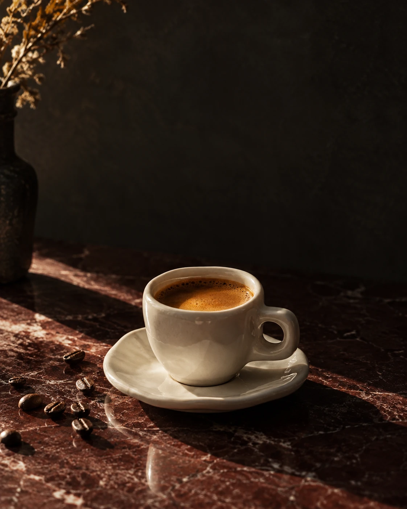
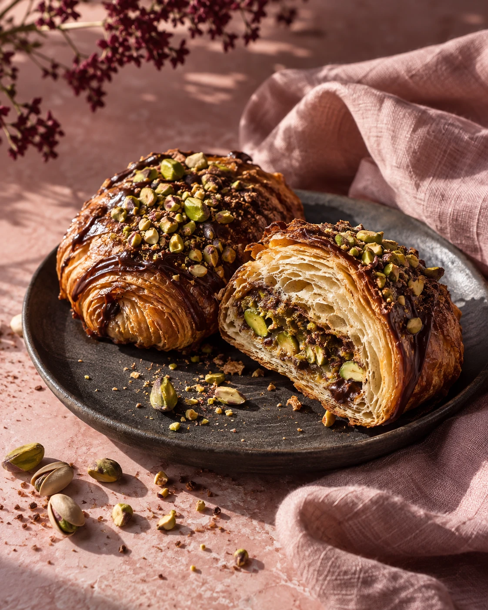

COFFEE. COMPANY. YOUR OWN PACE.
A little pause.
A better day.
Some moments deserve more than a quick sip.
Make a little room for yours.
Less rush.
More ritual.

01 — OUR RITUALSMALL THINGS, DONE WITH CARE.
For the moments
in between.
The first coffee before the world wakes up. A pastry shared across the table. A cold glass and a conversation with nowhere else to be.
That’s the feeling behind Caffaino.
Discover the selection
03 — LITTLE PLEASURES
Worth slowing
down for.
A closer look at the Caffaino mood.
DRAG TO EXPLORE · USE THE ARROW KEYS
NO NEED TO RUSH OFF.